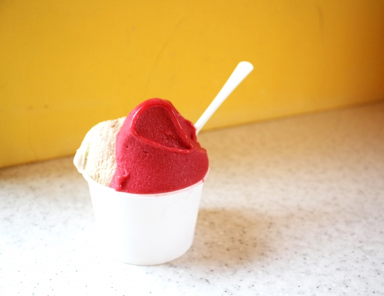

About
ジェラートについて
ジェラートの美味しさは、一度食べたらきっとわかっていただけるでしょう。一番の特徴は、その“食感”。イタリアの伝統と革新が融合した独自の製法で仕上げる「極上のなめらかさ」への追求を日々続けてきました。口に入れれば、舌の上でしっとりととろけて優しく香りが広がり、気づいた時にはほのかに余韻を残しつつフワッと消えていく…。食べた瞬間は濃厚なのに、サラッと喉を通り過ぎていくサッパリとした食感は、他では決して味わえません。

ジェラートの本領
ジェラート・アイスクリームとはもともと、イタリアの家庭で作られていました。イタリアでは、家庭農園などでとれた果物や野菜などをそのまま使ってジェラートを作ります。
Gelateria MAKOではそんな本場イタリアン・ジェラート・アイスクリームを日本人の繊細な味覚に合わせ、食べやすくアレンジしたジェラートがいっぱい。本場の食感をよりわかりやすく表現する、新しい美味しさにこだわったジェラート・アイスクリームたちがまるで宝石のようにショーケースに佇みます。
代表メッセージ
イタリアの片田舎で偶然食べたジェラートの味が忘れられないーあの味、旨味、食感、その時の全てを再現して見せたい。気がついたら修行に行く準備をしていました。ミラノ、ヴェネツィア、トリノ、ローマ、ナポリ..素材選びからこだわって各地の味を再現しています。ショップの雰囲気と合わせて、旅行に出かけた気分を楽しんでいただけたらと思います。